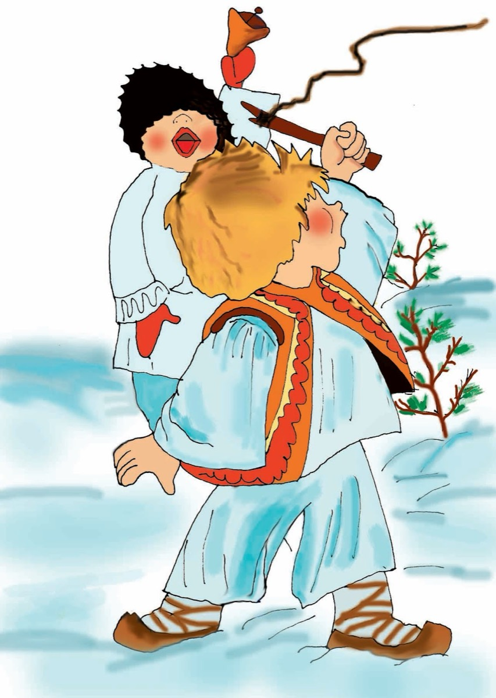

Plugușorul
Parodie 2019-2020
Aho, aho, copii și frați
Stați la geam și vă uitați
Că am venit cu uratul
Ca să afle întreg STATUL
Urâți măi!
Aveți curaj mai flăcăi!
Hăi, hăi, hăi!
Să se-audă peste zări!
Peste zări și peste văi!
Hăi, hăi, hăi!
Anul vechi cu anul nou,
Își fac reciproc cadou.
Cel vechi își predă ștafeta,
Cel nou începe naveta.
Prin orașe și prin sate,
La mulți ani cu sănătate.
Urarea e de an nou,
Ca să nu vă pară rău!
Ieșiți cu toți și urați.
Clopotele le sunați,
Iar bicele le pocniți,
La mulți ani, fiți fericiți,
Și de luptă pregătiți.
Urâți măi flăcăi!
Hăi, hăi, hăi!
Că zăpada n-a venit,
Facturile au sosit.
Banii sunt puțini în pungă,
Ca la facturi să ajungă!
Frigul totuși n-a uitat
Geamurile-au înghețat
Iar noi neapărat
Ne ținem toți de urât!
Haideți măi copii urați
Că de nu o să-nghețați
Ce mai stați?
Urați măi!
Hăi, hăi, hăi!
N-avem plug, poporul strigă
Și nu avem nici cotigă,
Nu avem caii cu noi
Și nu mai avem nici boi!
Caii sunt la herghelie,
Boii, la politică frăție.
Și la anul care vine,
Tot mai rău o să ne fie.
Și la cei ce vor veni
Tot la fel ne vor găsi!
Urați și din barbă să nu dați,
De la mine n-așteptați
Nuci, mere și covrigi calzi
Puneți gura și urați
Haideți flăcăi, ce mai stați?
Vă simțiți înstrăinați?
Urați măi!
Hăi, hăi, hăi!
De urat am mai ura,
Că doar nu ne doare gura.
Vreau să se schimbe ceva,
Să vină odată iarna,
Să schimbăm politica!
Să ne dăm pe tobogan,
Într-un stil EUROPEAN
Să zburăm pe saniuți
Liberi, fără corupți.
Asta vrem și de asta mai urăm!
Hăi, hăi, hăi!
Dar acum deocamdat’
Opriți-vă din urat
Ne batem gura degeaba
Iată n-a venit nici iarna
Iar politică se face
Cum război în timp de pace!
Opriți uratul nu plugul
Încă n-a venit belșugul
Pocniți bice, clopoței și dați cu tunul
Să cadă corupții, unul câte unul
Să-avem și noi odată
ROMÂNIA CEA CURATĂ!
Aho, aho, corupți, nu frați
Vă vrem pe toți arestați.
La anul și mai departe,
Să trăim în libertate!
Vasile Groza